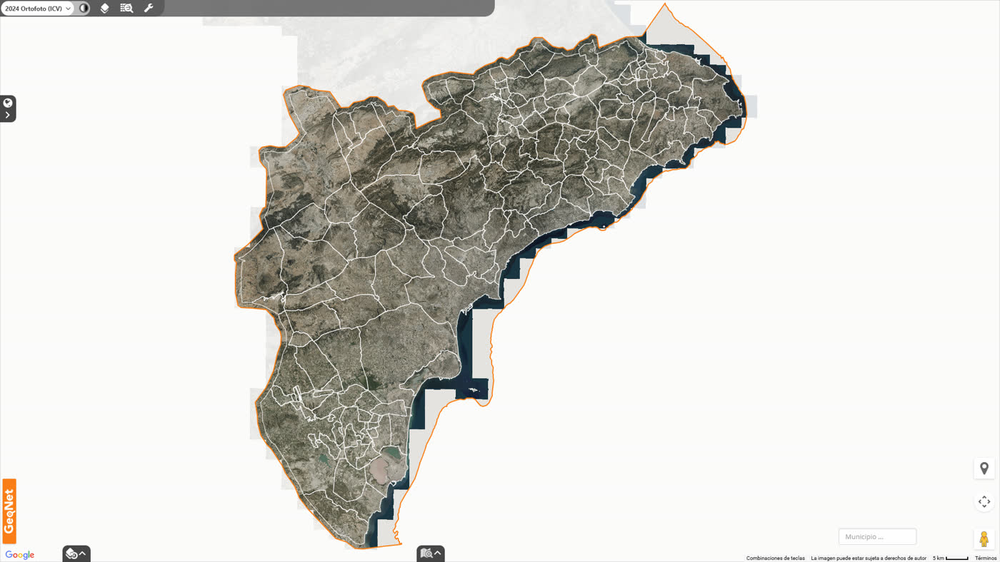
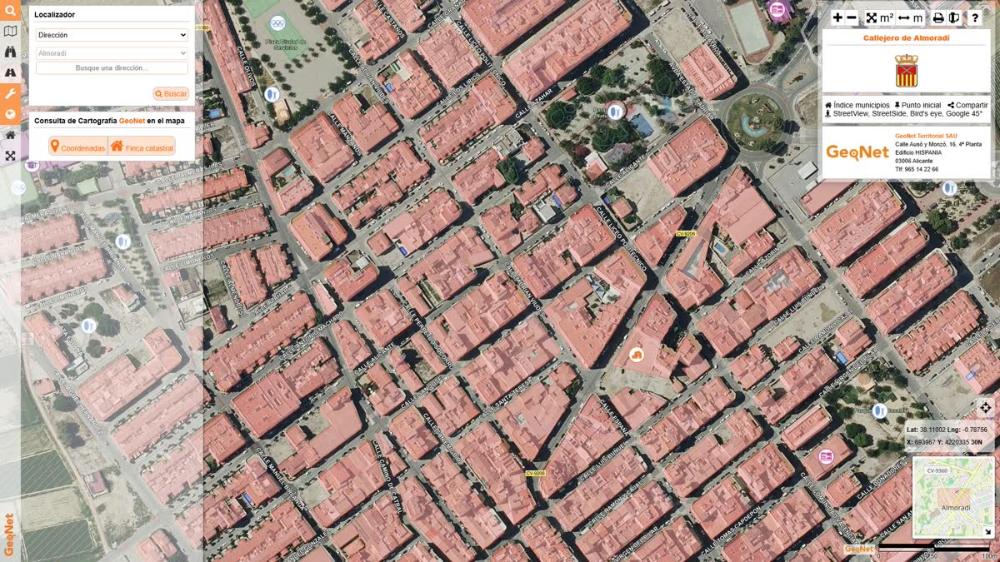
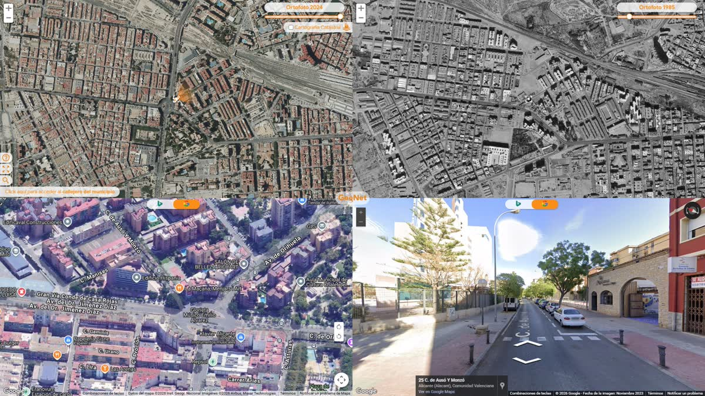

Consulta
Herramientas de información geográfica
Utilidades provinciales de acceso libre. El visor de capas públicas es una instancia de GeoGIS; el callejero y el multivisor son herramientas distintas. La información propia de un ayuntamiento se consulta en su geoportal.
Visor de capas públicas
GeoGIS con información de dominio público. No incluye capas propias de ningún ayuntamiento.

Callejero
Localizador de viales y números de policía de la provincia.

Multivisor
Análisis evolutivo del territorio: ortofotos, fotografías oblicuas e imágenes a pie de calle.
Para planeamiento, inventario u otra información municipal publicada, use el geoportal del ayuntamiento cuando esté en producción.